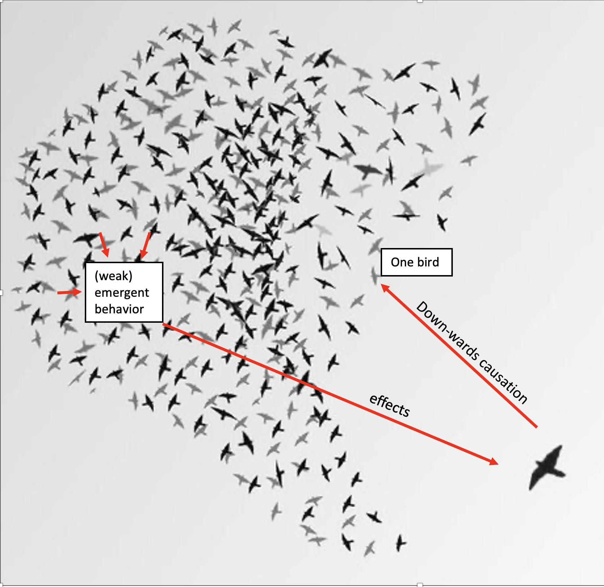
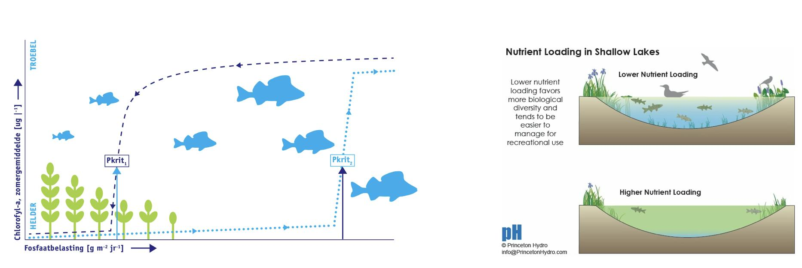

1 Introduction
1.1 What are complex systems?
Some things in life are simple. When you push a block, it moves. Pushing harder makes it move faster, and stopping the push stops its movement. When you open the tap, water starts to flow. If you open it further, it flows faster, and if you close it, it stops. Cause-and-effect relationships like this are clear and roughly linear. Such relationships are rare in psychology. Let’s take fear as an example. A fear stimulus, for example a barking dog, can lead to fear and flight, but also to anger and attack. Whether the stimulus is perceived as fearful might depend on subtle differences in context. It has also been debated whether the flight response precedes the feeling of fear or vice versa. Fear could also suddenly change into a panic attack. In psychology, cause and effect relationships are rarely simple, and effects are often non-linear.
These difficulties are not unique to psychology . Many systems studied in physics, chemistry, and biology show such complex behavior (Weaver 1948). They are complex systems. There is no full consensus on the definition of a complex system (Ladyman, Lambert, and Wiesner 2013; Heylighen 2009), I believe the core aspects can be summarized as follows.
Complex systems are made up of many smaller interacting subsystems, such as atoms, molecules, cells, neurons, and even entire organisms. I like the term subsystems because the lower level elements can themselves be complex systems1. The interactions between subsystems can be of different kinds, but they are usually local, fast, and nonlinear. Complex systems exhibit emergent behavior, meaning that these interactions result in global patterns or properties that do not occur in the subsystems themselves. The emergent processes usually operate on a slower time scale. A typical example, which will be discussed in more detail later, is the traffic jam. Cars react mainly to cars in their vicinity, which can lead to global patterns of congestion. Another example is magnetism that is not present in any of the atoms of the magnet.
In general, these patterns emerge through self-organization. Self-organization is a process in which some form of overall order or coordination develops from the local interactions between the parts of an initially disordered system. An example would be ants building an ant nest. It is important to note that no one ant oversees or directs this process; it emerges from the local interactions between many ants.2
Complex systems are open systems, meaning that they use energy that they have absorbed for the environment. I will explain this in more detail in a later chapter, but in a completely closed system, self-organization would not be possible. The emergent patterns in a complex system may be stable for some time, but often change suddenly. The study of phase transitions or tipping points is therefore central to the study of complex systems. They may also exhibit chaotic behavior, implying that they can be fundamentally unpredictable, the weather being a notorious example.
Let us look at one famous case, the flocking of birds (Figure 1.1). Flocks of birds move in a beautiful choreography as they glide through the air, their formations shifting and morphing as they twist and turn across the sky. Flocks are well understood and easy to simulate, as we will see in Chapter 5. Flocks fulfill all the criteria of a complex system (see Parisi 2023 for an extended analysis). They are open systems as birds use energy to fly. Next, each bird responds only to birds in its local neighborhood. They follow roughly three rules. They try to fly in the same direction as their neighbors, stay close to their neighbors and avoid collisions. These are fast and local interactions. I suggest you watch some videos of flocks of birds on the internet. What you see is globally organized behavior on a much slower time scale than the local interactions. This is a prime example of self-organization. There is evidently no one bird in control ordering other birds to change direction. The globally organized behavior of a flock is a form of spontaneous order. What you can also see in these movies is that stable patterns, say an oval shape, can suddenly change. The birds may change direction or split up. Such bifurcations or catastrophes (to be explained in chapter 3) are very typical of complex systems. You can also see that the behavior of these flocks is rather unpredictable. As said, flocks, and swarms in general, are well understood and can be easily simulated on a computer, but this does not mean that we can always predict these systems, an issue that will be discussed further in the next chapter.
Similar examples can be found in any of the natural sciences. Tornadoes, for example, are made up of air molecules that also interact locally. Tornadoes are unpredictable, self-organizing, global weather phenomena. A famous chemical example is the Belousov-Zhabotinsky reaction, a chemical oscillator (Kuramoto 1984). This reaction involves a mixture of chemicals. As the reaction proceeds, the solution exhibits strikingly colorful oscillations between clear and opaque or between different colors, depending on the specific reactants used. We will see many more examples in later chapters.
The prime example from psychology is the brain. About a hundred billion neurons interact with thousands of other neurons in their neighborhood. Compared to computers, brains are extremely energy efficient, but as all open systems, they do consume energy (the equivalent of a light bulb according to (Attwell and Iadecola 2002). Fast local interactions somehow form global waves of electrical activity that make up thought processes and even consciousness. The letters you are reading activate retinal neurons that initiate a cascade of electrical waves across billions of neurons that somehow create your understanding of this text (Roberts et al. 2019; Schöner 2020). How is this possible? For me, this is the most fascinating scientific question of all time. It’s the main reason why I’m a psychologist and not a physicist. I view the brain as the ultimate complex system.
1.2 Emergentism
What is the relation between complexity and reductionism? According to reductionism, complex phenomena can be explained by reducing them to the interactions of their individual parts or components. This raises two questions, one related to weak emergence and one related to strong emergence.
The first question is why it is possible to do science in any field other than physics, since ultimately chemistry, biology, and even psychology, are all about interacting elementary particles. Should we not first finish the study of physics before starting to think about complex molecules, cells, neurons, or higher-order human cognition?
Philip Anderson’s renowned paper on “More is Different” convincingly argues that the answer to this question is a resounding no (Anderson 1972). Science is possible at many different levels of description without fully understanding the lower levels. There is much to be said for reductionism, but somehow the laws of quantum mechanics are irrelevant when studying interactions between neurons or people. I don’t think that emergence in complex systems is inconsistent with a reductionist view of science (Bechtel and Abrahamsen 2005). One could say that complex systems theory explains why emergent phenomena such as atoms or neurons can be used as entities at a higher level of description to explain new higher order phenomena, without being a dualist. This fundamental principle of emergence is what allows disciplines like psychology to exist as distinct and independent fields of science (Fodor 1974). In the words of Herbert Simon: “In the face of complexity, an in-principle reductionist may be at the same time a pragmatic holist” (Simon 1962b). The concept of level is central to Simon’s architecture of complexity, in which each subsystem is itself a complex structure made up of smaller parts, and this pattern is repeated at multiple levels. According to Simon, these nested structures are ubiquitous in the natural world and in human-made systems because they are robust and adaptable. For in in-depth discussion of this level concept i refer to Wimsatt (1994).
The second, more controversial, question is whether emergent phenomena have an independent causal role (strong emergence) or mainly have descriptive value (weak emergence). Strong emergence is often associated with downward causation (Chalmers 2006; Flack 2017; Kim 2006). Downward or circular causation is the idea that higher-level entities or properties can influence the behavior of lower-level entities or properties. I like to link this to the flocking example. Flocks of birds are emergent phenomena that do not determine the behavior of the individual birds. The birds only follow the local rules. Flocking is an example of weak emergence. However, when predators enter the scene things change. Predators get confused by flocks of prey, not by the behavior of individual birds. So, the flock has some causal power. Moreover, the birds react to the movements of the predator. This could be seen as an example of downwards causation and thus strong emergence (Figure 1.2). Recent work attempts to quantify such causal emergence effects (Hoel, Albantakis, and Tononi 2013).

I believe that both weak and strong emergence are essential to understanding psychological phenomena. Our minds, encompassing conscious thought, self-awareness, reasoning abilities, natural language comprehension, emotions, and attitudes, are not mere artifacts and cannot be simply reduced to intricate patterns of neural activity. In my view, these mental constructs, such as consciousness, possess their own causal influence, and this is one of the reasons that psychology stands as a scientific discipline in its own right.
Of course, the relationship between the mind and the brain is one of the most debated topics in psychology. The neuro-reductionist view is popular in the field of psychology, both when it concerns the explanation of higher cognition (Schwartz et al. 2016) and psychological disorders (for a critical review see Borsboom, Cramer, and Kalis (2019)).
1.3 The field of psychology
The study of complex systems in the natural sciences (?fig-ch1-img3) is highly technical. I like to think of the field of complex systems as a toolbox of empirical paradigms and mathematical models and techniques (Grauwin et al. 2012). Models are often formulated in the form of difference or differential equations and subjected to, for example, bifurcation analysis. These are mathematical ways of describing the behavior of complex systems. Additionally, advanced numerical analysis, commonly in the form of computer simulation, is a standard approach. However, educational programs in psychology do not usually include courses in algebra, calculus and programming. Many psychologists lack the basic knowledge and skills to apply the toolbox of complex systems theory, as these are not ordinarily part of the psychology curriculum. Complex systems research simply seems too complex for psychologists and social scientists. One goal of this book is to provide psychologists with a first introduction to this technical toolbox.
Moreover, there are additional complications in applying the toolbox to our field. First, our subjects are much more complex than flocks of birds or tornadoes and display astonishing behavior. They can do science! They can also walk out of the lab because they find the experiment boring. This does not happen with lasers. Second, we have to deal with the ethical constraints of experimenting on our subjects. We cannot take them apart, a very successful approach in the natural sciences. Finally, there is the measurement issue (Lumsden 1976; Michell 1999). We tend to forget how incredibly precise the natural sciences, especially physics, are. In 1985, Richard Feynman famously claimed that the accuracy of calculating the size of the magnetic moment of the electron was equivalent to measuring the distance from Los Angeles to New York, a distance of over 3,000 miles, to the width of a human hair. I find that shocking. Less famously, I would argue that psychologists have not yet discovered America and have no idea where New York is. Our instruments generally fail to meet elementary requirements of reliability and validity, we are plagued by replication failures, and our theories are often imprecise (Eronen and Bringmann 2021). Navigating the behavioral and social sciences and knowing which data to trust and which empirical phenomena to model is an art in itself.
This is all unfortunate because not only our brains, but every subject in our field seems to have the characteristics of a complex system. Social systems are complex systems made up of individuals interacting to produce emergent phenomena such as cultures and economics. The human brain, the most complex system we know, is embedded in different hierarchies of very complex social systems such as families, education, economies, and cultures. We need the toolbox!
Despite all these problems, I’m not pessimistic. I would also argue that tangible progress in the behavioral and social sciences is possible. It is not that these sciences are completely unsuccessful. We know a lot about people’s attitudes, addictive behavior, cognition, and the social systems in which they interact. We study these, with some success, using advanced experimental designs, and we have developed (mainly) verbal theories about almost everything.
We also have no choice; we must make progress. Personally, I feel a strong tension between our struggle to elevate the behavioral and social sciences as a science on the one hand, and the enormous expectations of society to deliver on the other. Our most pressing global problems - climate change, overpopulation, war and violence, poverty, inequality, infectious diseases, addiction, to name but a few - are unsolvable without breakthroughs in the behavioral and social sciences.
The realization that the human mind in its social context is an amazingly complex system also offers opportunities. Despite their obvious differences, complex systems show remarkable similarities. A predecessor of complex system theory, general systems theory (Bertalanffy 1969), explicitly assumed that all systems share important characteristics. Certain mechanisms and phenomena seem to operate and to occur in similar ways at all possible levels of description (Simon 1962a). This is the primary reason for providing numerous modeling examples in this book that originate from disciplines beyond psychology.
An inspiring example for me comes from the study of shallow lakes (Scheffer 2004). Shallow lakes tend to be either in a ‘healthy’ state, with clear water and a diverse population of fish and plants, or in an ‘unhealthy’ turbid state. I like to compare these complex lake systems in the turbid state to a patient suffering from depression. This turbid state usually occurs suddenly. There is a critical phosphorus load at which the system “turns over” from being healthy to complete dominance by algae and bream. Typical of this type of transition is the hysteresis effect (Figure 1.3). This means that the turning point from clear to turbid and from turbid to clear does not occur at the same phosphorus load. The turning point to clear water only occurs at much lower phosphorus loads. These tipping points may be so far apart that reducing the cause, the phosphorus load, is not a viable option. Of course, all sorts of interventions have been studied, such as supplemental oxygen, chemicals, sunscreens and stocking predatory fish. These interventions have not been very successful, or only in specific cases. The fact that they had some level of success brings to mind the partial effectiveness of clinical interventions, such as those used in the treatment of major depressive disorder.

A breakthrough occurred in the 1980s. Catching all the fish proved to be a very effective intervention. The ecologists caught almost all the fish with nets during the winter. In the spring, a new, healthy equilibrium emerged, characterized by aquatic plants, other fish species and clear water. This new state is often stable for long periods of time. Remarkably, the analysis of the cause, the phosphorus load, was not part of the solution: although the increasing phosphorus load is the primary cause of the transition towards a turbid state, decreasing the phosphorus load does not cause the system to transition back into the clear state. The dogma of intervention, that the cause of the problem is the key to the solution, does not necessarily apply to complex systems. What this means for our thinking about depressed patients will be discussed in chapters 5 and 6.
In the following, I will discuss three reasons to be somewhat optimistic, based on three key observations about complex systems. The first key observation has to do with simplification, the second with the tendency of complex systems to be characterized by a limited number of stable states, and the third key observations is that all complex systems seem to be describable as some kind of network. Simplification is perhaps the most important one.
1.4 The art of simplification
Einstein supposedly said that everything should be made as simple as possible, but not one bit simpler. A fascinating and instructive example is the traffic jam, which is made up of many people, with their amazingly complex brains, in modern cars full of advanced technology. Where to start modeling such a complex phenomenon? The answer is astonishing. It seems that we can reduce people in cars to simple blocks in a lane, speeding up when there is space in front of the artificial car and braking when they get too close to the car in front. All lower levels of modelling are ignored. This is even simpler than a flock of birds.
It is not difficult to set up a computer simulation for this case. I recommend that you spend some time playing around with an example (https://www.traffic-simulation.de/). It does not take long to see that traffic jams can easily form and have an unexpected property: while cars move forward, traffic jams move backwards! Another interesting observation is that variance in speed causes congestion. But the variance is not in any of the cars. Variance and congestion are properties at a higher level of description. With this simulation, you can study different types of traffic situations and interventions. This type of simulation seems to be very useful for the design of motorways (Barceló 2010; Treiber, Hennecke, and Helbing 2000). There are actually different ways to model traffic jams. Jusup et al. (2022) distinguish between fluid-dynamical , kinetic, car-following , coupled-map lattice, and cellular automata models. They all reproduce many phenomena of real traffic jams.
Thus in complex systems, the qualitative properties of large-scale phenomena do not depend on microscopic details. Only higher-level properties are relevant to global behavior. A large part of the art of science is the finding of the right level of simplification. Suppose we are studying smoking. Do we model the effects of nicotine on blood vessels, how the hand with the cigarette moves from the mouth to the ashtray, or the number of cigarettes smoked per day? Do we include the effects of marketing and the smoker’s social network?
What is relevant and what can be ignored? It can be challenging to provide a definitive answer for specific cases. Nevertheless, in general, it can be stated that there is a limit to the lower levels that must be considered. When examining traffic jams, it is necessary to incorporate certain characteristics of individuals and vehicles, but delving deeper into topics like neuronal firing, DNA replication, or the intricate workings of car batteries becomes irrelevant. At that level of modeling, there is no relevant information that would alter the explanation of a traffic jam.
The traffic example shows that extreme simplification is sometimes possible and necessary. But finding the right level of simplification is not a simple task at all. In Borsboom et al. (2021) we propose a theory construction methodology (TCM) consisting of five steps. The first step is to identify the empirical phenomena that become the target of explanation. The second step is to formulate a set of theoretical principles that putatively explain these phenomena. Third, this set or prototheory is used to construct a formal model, a set of model equations that encode the explanatory principles. Fourth, we analyze the explanatory adequacy of the model, i.e., whether it actually reproduces the phenomena identified in step one. Fifth, we determine whether the explanatory principles are sufficiently parsimonious and substantively plausible. The article explains these steps in detail and provides an example, the mutualism model of general intelligence, which is explained in chapter 6 of this book.
I will add a few comments to this list of steps. First of all, step 1 is key. It is crucial to be precise about what the phenomena to be explained are. Phenomena are not the same as data. Data are particular empirical patterns (a concrete data set), whereas phenomena refer to general empirical patterns, stable and general features of the world (Haig 2014). As noted above, in the behavioral and social sciences it is not always clear which data patterns can be trusted. In the last 10 years, the replication crisis has led to a revolution in psychological methods, but many results are collected using potentially biased methods. One problem is publication bias. Negative results are still harder to publish than results that support hypotheses. In other cases, the results of different studies contradict each other, and meta-analyses show weak effects at best. Drawing up a list of the most important phenomena on a topic, such as depression, forgetting or discrimination, is often a challenge.
The second observation is that taking these steps is not a linear process. Often, when you are developing a model, you realize that some important information is missing from the list of phenomena. For example, you might be modelling addiction, but suddenly you need information about the combination of addictive substances that people use. And such simple questions are often impossible to answer. I spent days searching the literature for information that I expected to be readily available, only to find that many basic things are simply unknown.
A third observation is that formal modelling is mostly a matter of analogical reasoning. You have to study many examples of complex system models to understand how to construct such a model. Indeed, in my own work I often use established models developed in physics and biology as a base model. We will see many examples of this later.
Fourth, good models do not build in phenomena, but explain them from basic principles. What I mean by building in is that a phenomenon should not be an assumption of the model. An example would be a model that says that variance in the speed of cars causes traffic jams. Such a model may explain other things, but not the role of speed variance, because that effect is part of the assumptions. Models that make such assumptions are called phenomenological models. We will see examples of phenomenological models of complex systems, as well as explanatory models, where the latter are based on fundamental principles. Building real explanatory models in our fields is extremely difficult.
Fifth, it is my conviction that a metaphorical use of the complex systems approach should be avoided by using concrete formal models. It is crucial to strive for the highest level of scientific rigor. There are no special, more lenient, methodological rules for complex systems research (van der Maas 1995).
1.5 A limited number of equilibria
That complex systems can be simplified was the first key observation. The second key observation is that complex systems tend to be characterized by a limited number of equilibria. An important example is water. Water normally exists in either a solid, liquid or gaseous state (leaving aside the plasma state). These are stable states over wide ranges of temperature and pressure.
A biological example is the life stages of a butterfly (egg, caterpillar, chrysalis and butterfly). Most of the time these insects are in one of these four relatively stable states. Another example is the horse, which is either standing still, walking, trotting or galloping. I am convinced that we must always start by identifying the equilibria of a complex system. This also applies to psychological and social science applications. A bipolar disorder seems to be characterized by two stable states (depressive and manic). In case of addiction we may think of a state of non-use, recreational use, and heavy use (Epskamp et al. 2022). Similarly, we should identify the stages in falling in love, in understanding of calculus, in sleeping and in radicalization.
This turns out to be more difficult than it first appears. There is an ongoing discussion about the number of stages, even for something like sleep stages (Boostani, Karimzadeh, and Nami 2017; de Mooij et al. 2020). It is often possible to come up with more substages. For instance, in the case of horse movement people tend to further subdivide trot into three forms (working, medium, and collected). Subdivisions are also made in the case of heavy alcohol consumption (Leggio et al. 2009). It is possible to use objective statistical methods to support such classifications using modern machine learning techniques (automatic clustering) as well as more traditional means (finite mixture models, latent class analysis). I will say more about this in Chapter 3.
A further complication is that equilibria come in different forms. The simplest form consists of fixed points or point attractors, an example being a ball lying in a valley. Under undisturbed conditions, the ball could also be resting on top of a hill, which is an unstable equilibrium. An equilibrium could also be a limit cycle or oscillator. For example, two pendulums could swing in phase or out of phase. It gets even weirder when we get to strange attractors, which often take the form of fractals. This will be explained in more detail in the next two chapters.
Finally, it has also been argued that many complex systems, especially living systems, never reach equilibrium because they are constantly perturbed (Groot and Mazur 2013). I see this distinction between equilibrium and non-equilibrium complex systems as gradual. Some complex psychological systems are clearly stable over the long term. Unfortunately, this is true of many psychological disorders. In contrast, my understanding of the world, psychological science, and complex systems research is better described as a continuously perturbed non-equilibrium system with just enough stability to write this book (once).
I would claim that many psychological complex systems tend to be in one attractor state most of the time, but they occasionally change states. If certain control parameters slowly change their values, the current equilibrium can become unstable and a transition to another equilibrium can occur. This is what happens when we lower the temperature of water to below zero. Transitions can occur in many ways, also depending on the types of equilibria involved. The family of transition models is described by bifurcation theory. This is explained in more detail in Chapter 3, where we focus on a very important transition model, the cusp catastrophe, and in Chapter 4, which considers dynamical systems models.
1.6 Networks are everywhere
The third key observation of great relevance to the attempt to use complex systems modelling in psychology is that complex systems are networks, as they consist of interacting sub-elements. For me, the network is the most interdisciplinary research topic in modern science. Magnets, ecosystems, the brain, the Internet, and social networks are prime examples. Network science is a huge area of research with many fundamental insights and an important tool in modern psychological science.
Two applications in psychology are well known: the first is the study of neural networks, which started 70 years ago and has become the main foundation of the AI revolution of the last 10 years. In Chapter 5 I will discuss neural networks. The second is social networks, the simplest example being dyadic interactions. Social media such as Facebook are large examples. Key ideas relate to concepts such as weak and strong ties, central hubs and homophily, which are discussed in Chapter 6 and 7. The analysis of social network data is an exciting area of research (Scott 2011). It focuses on understanding how social entities are connected and how these connections influence various outcomes and behaviors. Connections between nodes (e.g., individuals, organizations, communities) can be based on different dimensions, such as friendship, communication, collaboration, information flow, or any other form of social interaction. These interactions may also change over time, which is studied in social network dynamics (Snijders 2001). The statnet.org website provides an overview of R packages for social network analysis.
Chapter 6 focuses on a novel use of networks, which I call network psychology. This is a level of description between neural networks and social networks. It involves modelling intelligence, attitudes, and psychological disorders at the individual level. Intelligence, for example, is modeled as an ecosystem of cooperating cognitive functions. This is radically different from the standard view that general intelligence is due to \(g\), a single underlying source. In the mutualism model of general intelligence (Van Der Maas et al. 2006), the observed positive correlations between scores on sub-tests of IQ test batteries are due to cumulative reciprocal developmental interactions between cognitive subsystems such as working memory, spatial cognition, and language.
Similarly, depression can be thought of as a network of mutually reinforcing symptoms. For example, sleep problems, a symptom of depression, can lead to increased fatigue and difficulty concentrating, which in turn can affect a person’s ability to manage daily tasks and engage in social activities. This can then lead back to poorer sleep quality, creating a cyclical pattern in which each symptom reinforces the others. This new view of mental disorders originated in our research group and is now very popular (Robinaugh et al. 2020). One reason for this is that many statistical techniques have been developed to investigate this network approach.
The latest line of research is the integrated study of psychological and social networks (Maas, Dalege, and Waldorp 2020). Chapter 7 deals with models in which psychological network models of attitudes are nested within social networks of opinion change. This model provides a new explanation of polarization.
1.7 Methods for Investigating complex systems
Complex systems are studied in various ways across different disciplines. We utilize computer simulations to examine the emergence in complex system models, analyze their unpredictable behavior, categorize the types of tipping points involved, derive equations that describe the overall behavior of complex systems, collect and analyze time series data, or experimentally disrupt the system to test its resilience. Following Sayama (2015), I categorize the methods and tools into two groups: those for systems with a small number of variables and those for systems with many variables. The first category is referred to as nonlinear dynamical system theory, which encompasses chaos theory, and catastrophe or bifurcation theory. The second category includes tools for studying multi-element systems, such as agent-based modeling and network theory. One might assume that the first category is irrelevant to complex systems, which by definition have many variables. However, it has been found that the global behavior of complex systems can often be described with a small number of variables, often just one, that behaves in a highly nonlinear manner. Therefore, I consider nonlinear dynamical system theory an essential part of complex system research.
This categorization is reflected in the setup of the book. The next three chapters will be devoted to systems with a small number of variables. Chapter 2 discusses chaos theory, Chapter 3 addresses sudden transitions as studied in catastrophe and bifurcation theory, and Chapter 4 provides an introduction to modeling dynamical systems.
In the second part of the book, we shift our focus to tools for studying systems with many variables, particularly agent-based modeling of self-organization in Chapter 5, network modeling in Chapter 6, and the application of both to psycho-social systems in Chapter 7.
1.8 Other work and sources
The complex systems approach is often introduced as the next new thing, but those days are gone. Even in psychology it can no longer be considered a new approach. Many different research groups have used the toolbox of complex systems research in all areas of psychology. This book will give many examples. One could even argue that a lot of work has been done that could be considered complex systems research but has not been published under that heading. For example, most neural network models of psychological processes are complex systems models because they investigate emergent computational properties of the interaction of neural units. This is also true of much work in mathematical psychology, for example when differential equations are used to study dynamical systems. Older work in complex systems research has often been published with reference to nonlinear dynamical systems. Other related approaches are computational social science and agent-based modeling.
Today, there are many interdisciplinary centers or hubs for complexity research. The Santa Fe Institute in Santa Fe, New Mexico, is the pioneer of complexity science. Its summer schools are highly recommended. Other examples are the Complexity Science Hub in Vienna and the Centre for Complexity Science at the University of Warwick. In my own country, the Netherlands, we have at least four of these centers. I’m a principal investigator at the Institute for Advanced Study in Amsterdam and an external faculty member at the Santa Fe Institute.
It is impossible to give a balanced review of all past and ongoing work on complex systems. I’m naturally somewhat biased towards our own work and contributions, but I did my best to point out relevant work. As a general resource to complex systems research with a bit less technical approach I recommend Mitchell’s book (Mitchell 2009), for a bit more mathematical approach I recommend the books of Serra and Zanarini (Serra and Zanarini 1990) and (Sayama 2015). Overviews of work in psychology are provided by Guastello, Koopmans, and Pincus (2008) and Port and Gelder (1995). Other great books are written by Heath (2000) and Kelso (1995).
1.9 Exercises
Visit https://www.traffic-simulation.de/. In what direction do traffic jams move? For roundabouts: what is a bad priority rule? Do traffic jams appear and disappear for the same values of critical parameters? Take for instance the ‘ring’ road and vary Politeness. (*)
Give your own example of a psychological process or theory where different stable stage or states are distinguished. (*)
Could consciousness be seen as a process of downwards causation. Explain your answer. (**)
As Simon (1962a) noted, atoms were once considered elementary particles, whereas in modern nuclear physics they are themselves complex systems.↩︎
It is also argued that emergence is a consequence of symmetry breaking (Krakauer 2023). Symmetry breaking occurs when a system transitions from a symmetric state to an asymmetric state, resulting in the emergence of distinct properties or behaviors. An example of symmetry breaking can be observed in the formation of snowflakes. Initially, ice crystals have a symmetrical hexagonal shape due to the underlying molecular structure of water. However, as the crystal continues to grow, environmental factors such as temperature and humidity influence its growth pattern. Minute variations in these factors lead to the breaking of initial symmetry and the formation of diverse and beautiful snowflake structures.↩︎